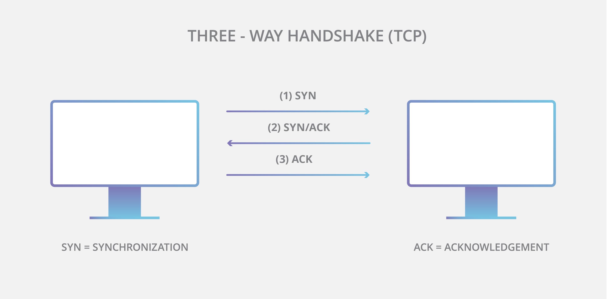

TCP/IP is a set of communication protocols that allows devices to connect and communicate over the internet. It is the foundation of how data is transmitted online.
When you send data, TCP divides it into packets. IP then sends those packets across networks. At the destination, TCP reassembles them into the original message.
Without TCP/IP, communication over the internet would not be possible.